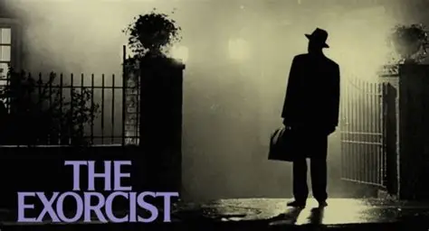

Me gusta mucho ver peliculas. Cuando era niño, mis primeros recuerdos de películas eran todas de terror, porque mi hermano mayor era fanático de ese género y siempre me las ponía. Al principio, era imposible que las viera completas, siempre terminaba tapandome los ojos o yendome a otro lado, pero con el tiempo empecé a familiarizarme con ellas. De alguna manera, algo de esas historias oscuras y espeluznantes empezó a captar mi atención, y en lugar de darme miedo, me fue generando curiosidad.
También me gustan las películas "clásicas". Y cuando digo clásicas, me refiero a esas que no pasan de moda y que, aunque las veas mil veces, siempre tienen algo especial. Un par que me vienen a la mente son Taxi Driver y Volver al Futuro. Son de esas peliculas que se quedaron grabadas en la historia del cine, pero por razones totalmente diferentes.
Obviamente este tipo de peliculas no pude verlas en su momento, pero tienen algo que me envuelven de una manera que me hace sentir parte de ese universo, como si de alguna forma las hubieras vivido.
Mis peliculas favoritas
Las siguientes peliculas las recomiendo a casi cualquier persona:
| Nombre | Género |
|---|---|
| Taxi Driver | Dramatico |
| El Exorcista | Horror |
| Volver al futuro | Ciencia ficcion |
| Halloween | Slasher | La Haine | Drama |
Mencion honorifica
— "A pesar de no ser una película, Skins es una de mis series favoritas. Puedo verla un montón de veces y nunca me aburre. Además, es una de las primeras series que miré durante mi adolescencia y me trae buenos recuerdos".
Skins es una serie británica que sigue la vida de un grupo de adolescentes en Bristol mientras enfrentan los retos de la juventud: la amistad, el amor, la familia, las adicciones y la identidad. Cada temporada presenta una nueva generación de personajes con historias intensas y reales, explorando temas como la sexualidad, la salud mental y la presión social. La serie es conocida por su estilo fresco y su honestidad, mostrando tanto los momentos difíciles como los divertidos de crecer.